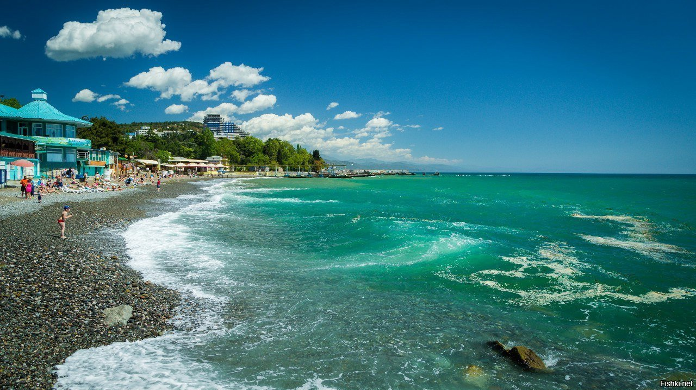
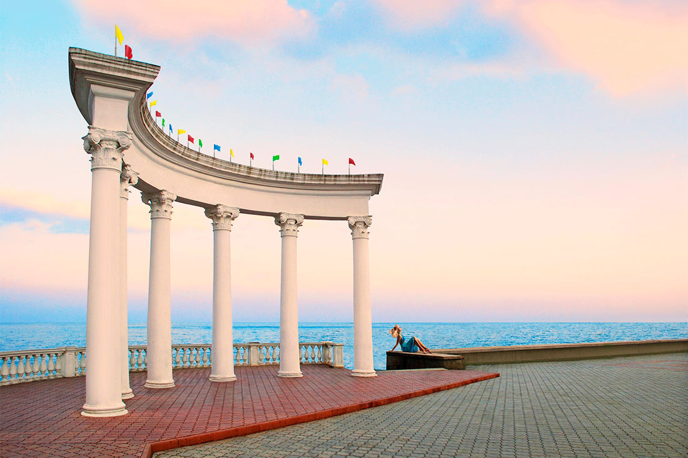
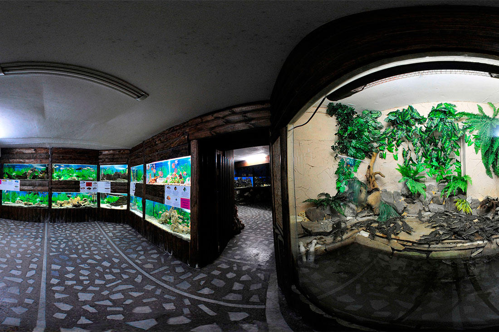
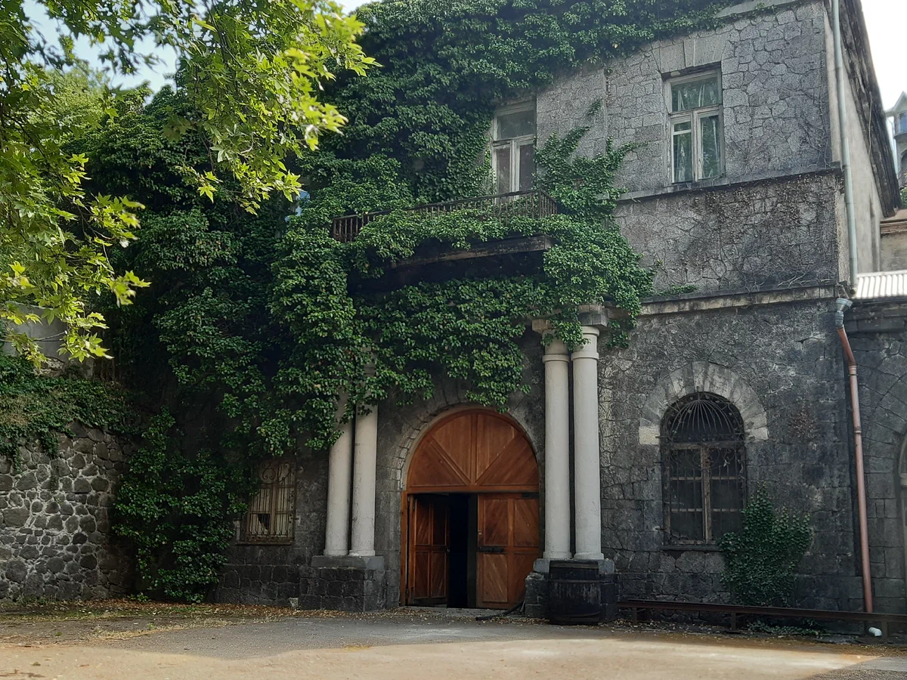

Алушта — это один из центров виноделия в Крыму. Купальный сезон длится здесь с середины мая по конец сентября.
Достопримечателства есть как в этом чудесном городе так и за его пределами, я предлагаю вам посмотреть обзоры на места которые вам больше придутся по душе.

Если вас инетерсуют недалекие и городские экскурсии и истории, то просто листайте дальше. Eсли вам больше по душе прогулки на свежем воздухе и рисковые приключения то переходите по сылке:Экскурсии
Экскурсии по Алуште
Набережная и Ротонда
Набережная – одно из самых популярных мест любого курортного города. В разгар туристического сезона набережная заполнена не только отдыхающими, но и продавцами сладостей, крымских вин и сувениров.Белоснежная ротонда с шестью колоннами и надписью «Алушта-курорт» появилась на берегу Черного моря в 1951 году, когда город благоустраивали в тяжелое послевоенное время. Ротонда – одна из самых узнаваемых достопримечательностей Алушты, которая по праву может называться символом города.

Аквариум

Один из крупнейших аквариумов на Южном Берегу Крыма собрал интересную коллекцию рыб и морских животных, которая разместилась в 4 залах. Здесь живут 250 видов рыб, 8 разновидностей черепах, крабы, крокодилы и другие животные, привезенные из разных уголков планеты. Сегодня алуштинский аквариум собрал масштабную экспозицию морских и океанских «жителей». В своеобразном подводном царстве можно увидеть скатов, морских коньков, черепах, пираний, мурен, морских звезд и ежей, а также покормить маленьких нильских крокодильчиков.
Винзавод Алушта

очень атмосферно, вино уже подготовлено - в стеклянных бокалах 9 видов вина и бокал с чистой водой. В 2015 году на подобной нашей дегустации в Массандре был В.В.Путин с Сильвио Берлускони, и в т.ч. им подавали "Столовое красное Алушта".а территории завода растет огромный платан, посаженный почти 200 лет Петриченко. И еще 5 таких же платанов высажено около заводской стены, предоставлены они были тогда, в 1830-е г., Никитским ботаническим садом. Платаны огромные, мы с мужем попробовали - каждое дерево могут обхватить 2 человека, стволы толстенные.Многие вина могут храниться сотни лет. Так, херес сохраняет свои качества до 600 лет. Но пробка требует замены каждые 20-25 лет. Поэтому даже на заводе при хранении коллекционных вин периодически делают переукупорку вина.